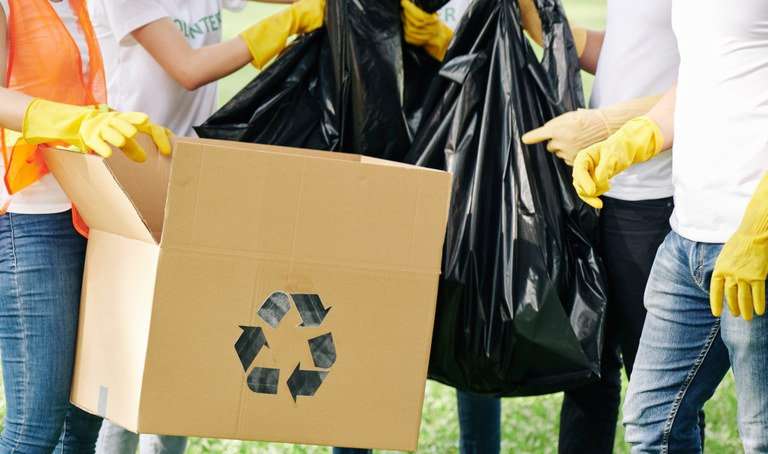

MEIO AMBIENTE
Audiência pública debate Plano Nacional de Resíduos Sólidos
Publicado em 13/11/2020 17h13

O Plano Nacional de Resíduos Sólidos, conhecido como Planares, foi tema de audiência pública nesta sexta-feira (13). Previsto em lei, propõe metas para a melhoria da gestão de resíduos sólidos no Brasil, fornecendo diretrizes a serem seguidas e alcançadas com a responsabilidade compartilhada. É uma ferramenta fundamental para operacionalizar os direcionamentos da Política Nacional de Resíduos Sólidos (PNRS), lançada há 10 anos por meio de lei.
Ao todo, já foram promovidas em todo o país seis audiências públicas sobre o Plano Nacional de Resíduos Sólidos. “Estivemos em todas as regiões do país. Na região Norte, contamos com 205 participantes, na região Centro-Oeste, com 178. Na região Sul, com 160, no Sudeste, com 236 e no Nordeste, com 159 participantes. Quase mil participantes nas cinco audiências que precederam essa. E, no momento, mais de 5,2 mil visualizações no You Tube, mostrando que cumprimos efetivamente todos os preceitos legais da participação cidadã na construção desse importante instrumento proposto pelo Governo Federal”, explica o secretário de Qualidade Ambiental do Ministério do Meio Ambiente, André França, ao abrir a audiência desta sexta-feira.
Para o secretário, essas audiências regionais permitem trazer, exatamente, as percepções dos problemas de resíduos sólidos nacionais, já que o Brasil é um país com realidades muito distintas.
“O que é um problema no Norte, não é um problema no Sul, e vice-versa. Ou o que é um problema comum, por vezes, tem formas diferentes de ser solucionado, de acordo com as características regionais dos locais. Então, foi muito rica essa passagem por todas as regiões do país, para ouvir as dificuldades e refletir nesse instrumento as possíveis soluções”, destaca França.
Planares
Com 186 páginas, o Plano Nacional de Resíduos Sólidos propõe, por exemplo, novas regras para melhorar a gestão de resíduos, a atuação dos catadores de materiais recicláveis, o consumo consciente e o descarte adequado. As metas propostas, se aprovadas, valerão por 20 anos, podendo ser revisadas a cada 4 anos.
Segundo o Ministério do Meio Ambiente, a versão proposta do Planares está alinhada com ações e programas da Agenda de Qualidade Ambiental Urbana, lançada no ano passado. Os principais programas dessa agenda são o Lixão Zero, o Combate ao Lixo no Mar e o de Logística Reversa.
Metas previstas no Planares
Entre as propostas, está a de encerrar todos os lixões e aterros controlados existentes no Brasil até 2024. O país ainda possui mais de 3 mil lixões.
Outra meta do Planares é o acesso, até 2040, de 72,6% da população à coleta seletiva. Em 2036, a meta é atingir a universalização da coleta de lixo.
O plano prevê, ainda que, até 2040, 100% dos municípios brasileiros tenham alguma forma de cobrança pela prestação dos serviços de manejo de resíduos. E 95% das cidades, que tenham serviços prestados por catadores, formalizem contratos com cooperativas e associações.
No Brasil, segundo o Ministério do Meio Ambiente, 35% de todo o lixo produzido é passível de reciclagem, mas, desse total, apenas 2,2% chegam, de fato, a serem reciclados. Com o plano, o objetivo é ampliar em dez vezes a quantidade de reciclagem de resíduos secos no país nos próximos 20 anos.
Por meio do Planares, o país também propõe recuperar, até 2040, 45% das embalagens em geral colocadas no mercado por meio do sistema de logística reversa. A logística reversa é um conjunto de ações, procedimentos e meios destinados a viabilizar a coleta e a restituição dos resíduos sólidos ao setor empresarial, para reaproveitamento adequado.
Política Nacional de Resíduos Sólidos
A Política Nacional de Resíduos Sólidos contém instrumentos importantes para permitir o avanço necessário ao Brasil no enfrentamento dos principais problemas ambientais, sociais e econômicos decorrentes do manejo inadequado dos resíduos sólidos.
Prevê a prevenção e a redução na geração de resíduos, tendo como proposta a prática de hábitos de consumo sustentável e um conjunto de instrumentos para propiciar o aumento da reciclagem e da reutilização dos resíduos sólidos. A PNRS também cria metas de contribuição para a eliminação dos lixões e institui instrumentos de planejamento nos níveis nacional, estadual e municipal.
O Planares está em consulta pública desde julho. Os interessados têm até o dia 16 de novembro para fazer contribuições.
Consulte a versão proposta do Plano Nacional de Resíduos Sólidos.
E para contribuir com o Planares, você pode conferir as dicas.
Fonte: Governo do Brasil
Foto: Governo do Brasil